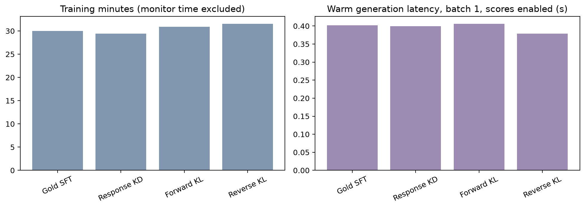
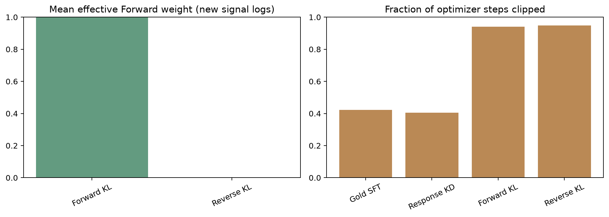
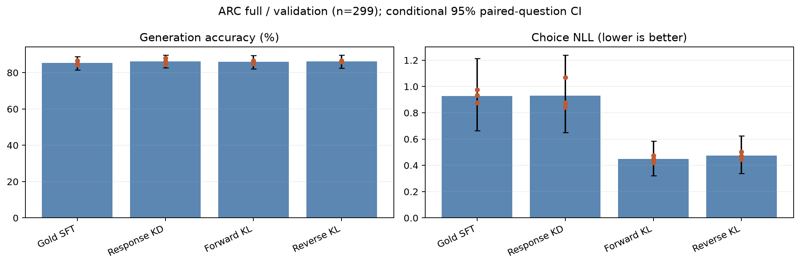
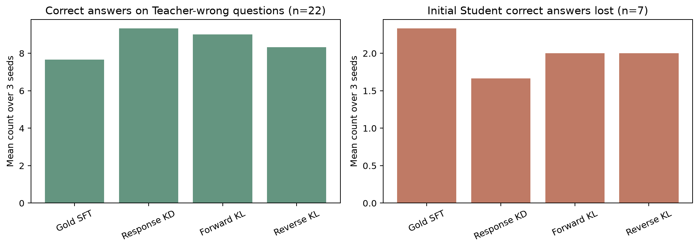

Four-condition interim validation: 12/18 runs
Four of six conditions complete; three seeds per condition; validation n=299. Epoch curves use fixed train/validation subsets of n=64, seed 42. Intervals are conditional on the observed seeds and secondary comparisons are exploratory. The primary Adaptive-minus-Fixed comparison is pending; test has not been evaluated. Error subsets are descriptive.
calibration costs
costs
gate_and_clipping
learning_curves objective_curves
objective_curves performance
performance
teacher_errors